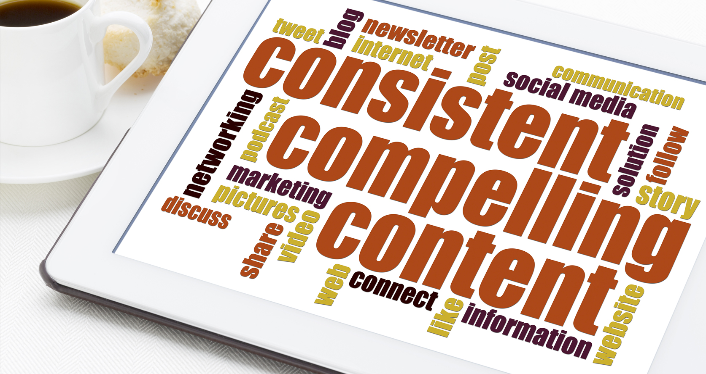
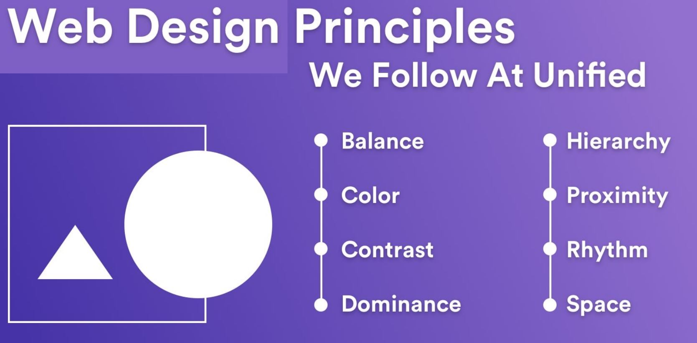
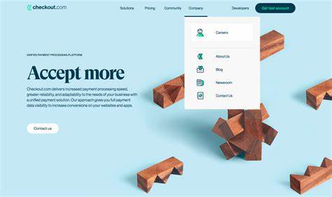
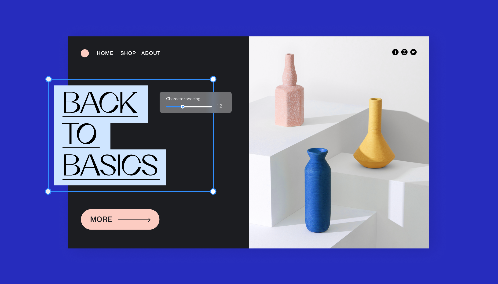
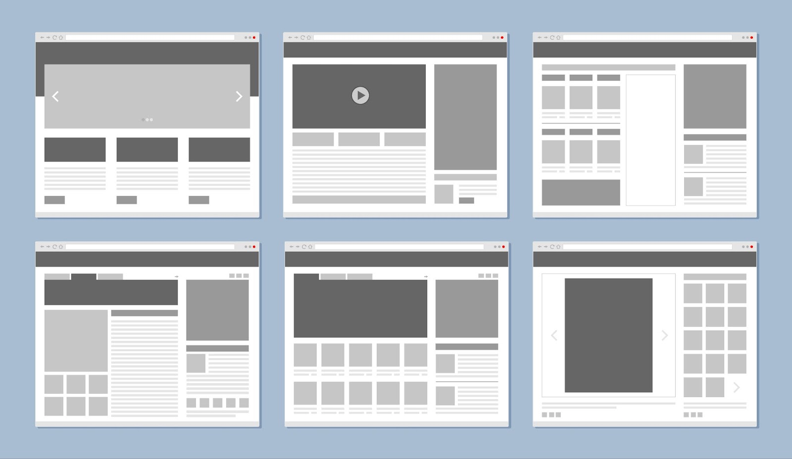
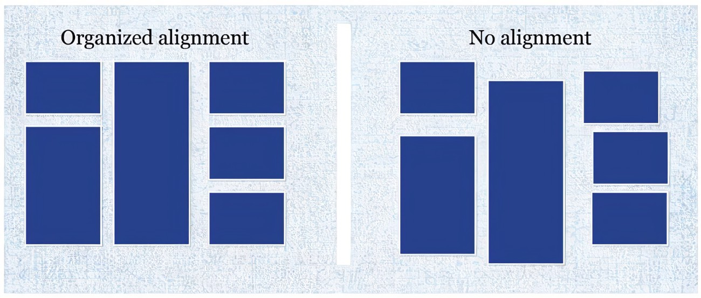
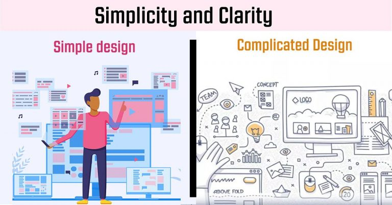
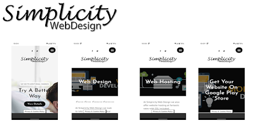
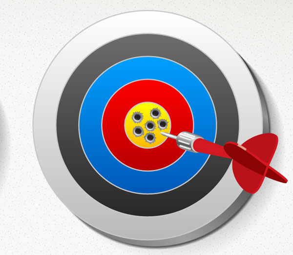

When it comes to design a website usability is very critical and crucial concept for the web developers.Usability mainly focus on
effectiveness and efficiency user interaction with the website.When it comes a user friendly websites, a website which is easy to use, intuitive and enhance
the good user experience has more and longer visits.User friendly websites also have good feedback from it users.
Usability refer to the user ease when user
interct with the webiste.It involves creation pof the intuitive navigation becuase it allows user to navigate between different pages of the website quickly
with less effort. Website provide the claer intuitive menues and navigation bars.Implementing the search bar for direct access to the content user looking for.
A webiste provide all accessible features to all it user including for the disables user. Website deliver the content smoothly and fast across all devices to its users.
Usability main focus in minimising the user frustration by giving the straightforward content and providing them helpful feedback, all during maintaing the performance and
functionality of the website. Ultimately, usable design of the website enhance the user satisfaction by making sure that tasks are very easy to finish without putting user in confusion
and user unnessary efforts. Within time period keep looking at the web usability and user reviews regarding website for implementing changes.
75% of online users judge a company or organisation based of the website design
(stanford University). Another research shows that 83% user move out of the
website if website load time is more then 3 second
(CLIQUE). A web developer always look into static so he need to knows what user like in webiste and what users does not like in website. So it s
very crucial to look into the usability static for designing a website.
Consistancy
When it comes to the consistancy for designing a website it refers to the maintaining uniformity across whole web elements, ensuring that user have
the predectable experience. Consistancy for designing a website should includes visual, functional,navigation,content,responsive etc.
Visual consistancy:
For visual clarity keeping the fonts,colours,buttons and navigation same throughout all the pages of website
This would make website appealing and eye caching for the user. This will alllow user to spend more time on website. 38% users will stop engaging a website if the website
layout is unattractive and website content is unconsitant
(HUBSPOT). This emphasize how important is layout of the website for attracting and keeping the potential visitor on website. A poor visual layout and web structure cause the
loss of the visitor. So, a good well managed visual design which is consistant throughout all web pages is very important for making a website standout.
Content Consistancy:
Most important thing in web developing that your web should have consistant content. Web content should be upto the point and related to the topic
of explanation. Content style should be same throughout whole website. Web layout,font style, formating text and messages all need to be consistant. 65% user said that
they beleive in website those who have consistant content in all web pages is more trustworthy (demandmetric).

Consistancy in web design may very in web design. In consistant web design mean a website layout, font, colour, navigation,internal and external consistancy. A web design look
should be clear and eye friendly for all user.In conclusion, maintaining the web design consistancy need the blend of
good web design skill.
Web design principles:
Effective web design goes beyond and above just creating a good nice web page, it comes with ease of users, less load time, easy navigation,simplicity,
clear and coherent content,choose of effective colours etc.A good looking and clear website is fine because it gives quick access to the users what they looking far. When it comes
to the effective website it mean web design should attract the user and keep user visit longer it means retaining user. A well design website ensures that anyone who visit website
easily navigate across the web effortlessly , find information quickly and enjoy seamless experience across the web in all devices.
The key principles of the visual clarity and simplicity
are key concept for the well structured effective website. While the consistant design build the trust and familirity among the web users. Moreover the easy user-friendly and fast
load time enhance the web usability. ENsuring that user dont get frustated beacuse of the web design and loading time, leave website prematurely. A web designing is very first
and last imprssion on user.
A crucial static to highlight is that 48% of users consider web design as nmber 1 factor in determining the credibility of
any business (bluecorona) This study by bluecorona shows how strongly web
design influences trustworthiness and first impression on the brand. So web design is vital for success of any bussiness, blogs, stores etc run over the web services. A good design
and well managed website catch more visitor and have positive rewiews from user then other websites.

Navigation:
The most crucial thing in web designing is how the pages and differrnt parts of the web how thwy navigate when interact with them fastly. Naigation
bars have fifferent sizes and appears differently in different devices. Decoration of navigation bar is very important as it it main thing for interaction. Choosing ring font, clours
and location of navigation bar is crucial. Font size is important as it should not be small to find it, it should have right size that easly locate. If using buttons for navigations,
they should be clear and visualy stand out over the pages.As it comes to the navigation colours, there should be a match of clour with the web because it make the look good and user
friendly. Good colour contrast make the nav bar look clear in the page. When it comes to the loacting the nav bar it is important for web developer to know there target audience. If
target audiences are mobile user then nav bar according to that. Always design nav bar for all devices (hubspot).
Why having good navigation important and how it improve web functionality?
Navigation in web are the buutons or menue user interact with which allows user to view different pages or using the features of that web. User
experience is very important for any website. If website have good navigation it improve user experience because user can get what he is looking for with interacting the nav bar.
So user does not leave website quickly, So he stay for while too look into the in formation and features of that website. It also boost the SEO(Search Engines Optomisation) as web
interaction work properly as it should meant to be.When it comes it Accessibility a wen nav play important role for easy access to all user of the web.
 Main goal of any website is to convert visitor into permanent user of your website or if website
is for bussiness it main goal is to conver visitor into the customer who buy your products or services. Agood navigation along with other webdesigning principles help to do
that (Agile).
White-space
Negative space which is also known as the whitw space is empty space around the web page content material. It basically use for organisation purpose,
improve visuale experience of the visitors. This also use for future plan to add new content or new elements. Using the white space has history behind it. It first started by
chinese using the empty space on rice paper. Using empty space was classic way in 20th centuries design.In modren world white space been interoduced and used by the web designer and
designing industry because of white space classic nature. Web user does not look into the pages contain a lot of content rather then they look into small content look with more
negative space.
White space give visual clarity to the web content and over all to web page. It enhance visual experiene by giving clear view to the web content. A good white
space divert the user eye to the content or to the point they are looking for which enhance the user visits to the site. Using white space in web designing is a tool to get visitor
attention which is used by the web designer.People get frustated when they see the pages full of content. So whwn they see pages full of words they just leave page, without looking
into it. Gtting a good visitors numbers on web pages using White space is very crucial in term of successfull web pages. It also enahnces the SEO and chage visitors into the
customer for business web pages(Interaction design foundation)

Image shown is giving the best exaple of white space used by the designer. Web designer leave more then half space empty enhance user experience and make sale look easy. There are
many types of white space use in web designing. Using white space in a well design manner depend on the skill of web designer how he utilise those space and make a clear view for his
user.Overall white space is very crucial in term of web designing and it play a big role in success of the website. Here is reference of good used of white space in website
(WIX Blog).
Site layout:
Site layout is critivasl aspect to learn in designing of website. Site layout fall upon the designing all web elements, site layout play a pivotal
role in overall user experience.A wbsite layout holds all things off website in term it is basic framwork of website which holds web content,visitor guides and shapes the web
interaction. So website layout is very crucial for all web developer who aim to desing web. A website layout is basically arraging of web elements like visuals elements. It involves
placing of text, images, buttons, and other elements and how they are positioned relative to each other. Positing elements are importrant bacause they measure how the webpage
look like. Web Layout includes considerations like alignment, spacing, and hierarchy. So web layout comes with whole web designing and followiung golden roles of the web design
principle.
A website layout is broad thing it comes with Website layouts can take many forms, from very basic single-column designs to a very complex multi-column
arrangements on web. They shold be a symmetrical or can be asymmetrical. A web layout could be a static layout, with a fixed width and height, or responsive, adjusting to fit
different screen sizes. So it mean it can be static or dynamic. A dynamic layout is used for most ecom while static is used for displaying written content for information
analytical purposes(Common Ninja).
 A website layout has all in it like menue or nav bar, content, header,
footer, back ground, images, videos etc. There are many web site layout forms. F-layout: It is basic web page layout goes naturally top to bottom according to eye
nature, It goes top to miidle where main content lies finally to the bottom of the web page. All key elements amd call to actions are placed along the F elements which catch the
user attention frequently. Z-Layout: The Z-Layout is one of main layout patteren based on eye movement patterns, this time following a "Z" pattern. The eye starts
at the top left, moves horizontally to the right, then diagonally down to the left, and finally horizontally again to the right. This layout working according to Z word start from
top left goes right and back to bottom left goes to bottom right This pattern used by Facebook. Grid and One page-layout: Grid pttern is most poplar among
other pattern because it gives claer view to content using Column and rows in grid. It is good for creating portfiolo as use grid to add work experience etc. One page
layout is simple layout pattern as it added all content in one scrolling page. Mostly used for presenting word data.
Alignment:
Just building a website does not make any sense if all elements are not placed in appropiate location on the web page. Alignment is method to put
content on the appropriate place as you like using right,left,top, bottom, measurement,size,font,style etc. Alignments in web developing used by the web designer to design a website,
most commonly used alignments are four right,left, center and justified. Center is most commonly used beacuse in web we placed more content in center.
Left alignment most commonly used in books and magzines on the body. It gives a reader clear reading and enhance visual experience make it more airy. Alignment in design creat
a dynamic environment, if being used properly by the designer. Justify content alignment is more commonly used in editoral stuff to craet the column of content using either the
right or left. Using the alignment need good skill to use them in web designing. A good and balance use of the alignments give website more dynamic and
hormonius look which gives web layout splended look and make website standout.
Why Alignment matter: There are many reason why alignments matter in web design but basic is it gives the web page harmony and balance which make the sense. Perhaps this
is most obvious reason of of alignment in web designing. A web page should be aligned everything on correct place which gives it more professional and dynamic look and catches the
attention of the vistor and more important bfor the bussiness website to sell the products and services (seahawk).

Clarity:
The term clarity means how clear, comprehensible and informative web page is. Making sure whatever you are creating and designing is clear and
to the point. If all content is clear precize make it is easier for the visitor to look into it and they get easily what they want to see or what they are looking for in your web
page. The term clarity is very broad and comes with the term of visuality and understanding . Visual clarity means how is your web page look when a visitor look into it. It
should be visual clear Using of proper alignments, white space, colours, navigation and site layout marke a web page more clear and user friendly.
The
challenge is about taking things that are infinitely complex and making them simpler and more understandable. — Robert Greenberg
First term in clarity comes is visual clarity . If content is visual use of appropriate colour ad text font make and web page much more clear
and nice to look into it. As an example if a product selling website is full of content and other stuff but is not clear about it pupose of selling that particular niche is
useless. Beacuse that website purpose is not clear and will not make any sale on the other hand a website show clear view of product and advertise that product nicely with clear
customer rewiew will make more sales and will have positive customer feedback then the first sale store.

So it is more important that keep evrything clear it should be clear
visualy and clear in all realm about that niche. So clarity is very important in any all web pages and is very cruial in term of bussiness to make sales because customer does not
trust on unclear data think this is not legit (Medium)
Simplicity:
Simplicity in web design is refer to creating a clear and easy to navigate web page or web pages those pages creat ease for user to use them. It is
about making sure that every part of the wen page that you design serves a purpose and add to enhance the user experience rather than frustating visitor.Simplict is same to clarity
but use the term simplicity mean dont use too much feature and catch stuff to make it look upto that stuff unless keep everything simple that even user with less web experience easily
navigate through your web pages.
The term simplicty sart with minimising the complicated stuff into short comprehensive and understandable formats for all types of
the user. Avoid all types of sketchy stuff and focus mainly on content purpose what content serve to the web users. Make things simple and precise so user can easily get what you meant
of the content.It is important to know your target then craat content accordingly e.g for professional users you need to creat professional stuff and if your target audience are
students then creat simple things that student can understand etc.

For keeping
web page simple use navigation in web are the buutons or menue user interact with which allows user to view different pages or using the features of that web. User experience is very
important for any website. If website have good navigation it improve user experience and keep it simple.Because user can get what he is looking for with interacting the nav bar.
Another important aspect of simplicity is maintaining a consistent design throughout the website. A limited color palette and the use of one or two fonts across all pages keep
the design cohesive and professional (Study smart).
Accuracy:
There is no point of doing something which is not accurate. So, accuarcy always comes first. In web development you have to creat acontent which is
valid and have to do the data validation. Accuracy in web development is important in term of reason of both aesthatic and usability.All content of website must contain the information
accuarte and can be confirmed by the other sources. If handling the numeraical and analytical data should be accurate accordingly. If dealing with the written data as an information
should be accurate in term of spellings,grammer and references. Always take time to do proof reading and look into all things have you done. Correct everything before you submit and
test your codes and fix any bug you have in code or anything does not work as you think.
Kepp in mind dont copy paste somone work without there permission. Always refer to the author if you quote something from somone to give them credit. Use helping tools to correct your
mistakes and get help fom friends and your tutors.
Importance:
Vistor looking for corret information and trust websites with correct information. If they see incorrect detail, user does not trust on your website.
Providing orrect information build a trust. If everything is accurate then user visit website more then once. Providng everything accurate is very crucial for service and bussiness
based website. So success of any website depend on the information accuarcy(Website Builder Rewiew(www)).

Accessibility:
Website user are broad and all type of people also thsoe as well with disabilities. So building a website in such dynamic way that people with
disabilities also can use and easiy navigate throughout your website.Accessibility in web design means creating web pages that can be used by people with a wide range of abilities
and disabilities. This encompasses auditory, cognitive, neurological, physical, speech, and visual impairments.
Using Alt function in image tag make the image understandable to the user with diasabilities.his means providing text alternatives for non-text content (like images), creating
content that can be presented in different ways without losing information (such as using a simpler layout), and making it easier for users to see and hear content.User interface
components and navigation must be operable by everyone. This includes ensuring all functionalities are accessible via keyboard, giving users enough time to read and use content,
and not designing content in a way that is known to cause seizures.
Using visual contrast and ease of navigation bar, menues and links make it easier and add into the user fiendly experience. Using all Accessibility fetures enhance the web
SEO(Search Engine Optomisation)